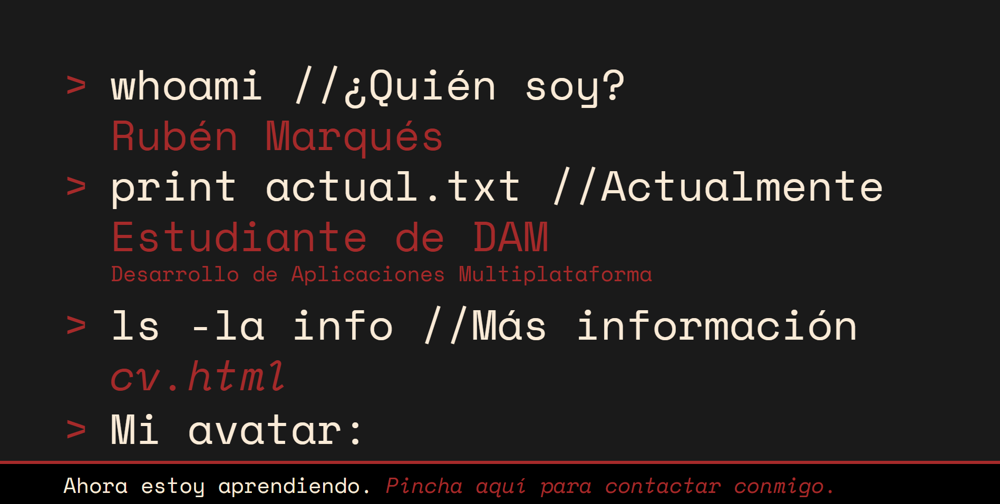

| > | nano /proyectos/portfolio/ |
Desarrollo de un portfolio web personal utilizando HTML5 y CSS3, concebido como un espacio para presentar mi perfil, trayectoria, competencias y proyectos. El sitio se divide en cinco secciones principales: una página de inicio con una presentación personal y una selección de proyectos destacados; un apartado sobre mí, dedicado a mi trayectoria, aficiones y objetivos; una galería de proyectos realizados durante el trimestre, acompañados de capturas, descripciones y aprendizajes; una sección de currículum con información sobre mi formación, competencias e idiomas; y una página de contacto con un formulario, correo electrónico y enlace a GitHub.
El proyecto utiliza etiquetas semánticas de HTML5, navegación mediante enlaces y formularios. Su diseño adopta una estética inspirada en las interfaces de terminal, con el objetivo de combinar una identidad visual propia con una presentación clara y funcional.
Actualmente sigo trabajando en esta página.
